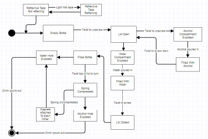
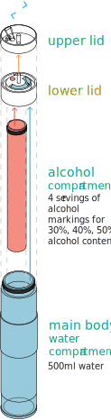

Binge drinking is an area of concern for many upper year undergraduate
students and their families, however, many of the negative side effects associated
with a night of heavy drinking are actually caused by dehydration. This product
aims to address this problem by making it easier for the users to access water,
as well as encourage them to drink more water.
Primary Users
For this project, 6 unique screens needed to be created: The Home Page,
Settings page, Pump Test, Add Ingredients, Drinks, and Drink in progress. The main
challenge for this project were the technical limitations that it came with. In terms
of UX and UI design, both the hardware and the software were limited in terms of what
graphical elements could be displayed, and what controls could be used.
Secondary Users
The primary users of this product are recreational drinkers who want to reduce
the negative effects of alcohol consumption, such as upper year undergraduate
students. These are people who live in environments where drinking is a part of
the culture, and is seen as away to socialize, or relieve stress. However, students
often drink without understanding how much consumption of alcohol is “too much”.
They are unaware of the importance of staying hydrated while drinking and encounter
numerous negative side effects such as lack of focus or head pain. This results in
hindered performance when working or listening to lectures.
Tertiary Users
The tertiary users of the product are those that are indirectly affected by the bottle. The most
prominent example of a tertiary user would be the faculty members of the school.These members
of the school are affected by the performance of primary users, who are the ones who
come into classes under the after-effects sof alcohol.

Design Process
Our brainstorming and QFD chart led us to three different
low fidelity prototypes. The focus of these prototypes was
to encourage the user to drink more water, either by making
it easier to access water, or to remind the user to drink more
water. We gathered the pros and cons of all the designs
and translated that into our medium fidelity prototype. We
recognized the fact that the bottle should be of comfortable grip
width, encourage users to consume more water than alcohol,
and should have a lid to avoid spills. For user testing, we
explored various color options for visibility and appearance. We
also tested various grip heights and bottle widths for our target
users. With the user testing information from the two previous
rounds of prototyping, we refined our product design into a PET
water bottle with an alcohol compartment.

Final Product
The final product as a waterbottle with
Turn the lid to access the alcohol compartment! The lid automatically spins
back to the “water” position to passively encourage the user to drink water
Lid:
After user testing, we increased the size of the hole in the bottle lid accessing the water compartment as
we learned the previous hole was too small and reduced water flow. This fails to encourage users to consume
more water and our original purpose, thus the change had to be made. Threading was also added to the lid,
, and bottle body to easily attach each compartment. The lid is made of two parts, the bottom contains a track
where the twisting mechanism occurs. The twisting mechanism comprises of a spring attached to the stopper,
and a strong magnet attached to the other face of the stopper. The top part of the lid has an extrusion that
fits into the track. One face of the extrusion is used to push the spring, and the opposite face contains a
magnet that is attracted to the magnet on the stopper in the bottom half. Once combined, the mechanism allows
the lid to spin, and snap back in place. Furthermore, the top of the lip will be completely flat and the axis
that the lid spins on does not pass the top of the lid.
Material:
The material chosen for our final design is polyethylene terephthalate copolymer because it is our best option as determined through
a best of class chart. In addition, keeping our primary user’s financial situations in mind, PET is also a more affordable option
than other conventional materials such as stainless steel. Rubber sealings need to be added onto the bottle body,
between the two halfs of the lid, and on compartment body to reduce the likelihood of liquid spilling out of each part.
Manufacturing:
Originally our high fidelity prototype was 3D printed with Ultra-T material, but through our user testing,
we realized the bottle failed to be waterproof. As this does not meet our basic function requirements, we decided to outsource the
production to reputable PET bottle manufacturers for our final product.
Color:
Upon user testing, we made the bottle black as it was a neutral colour that did not get dirty quickly.
Black also gives the bottle a minimalistic look which was popular among our testers. The grip was made gray to
provide contrast, so users could differentiate the two materials easily.
Magnets:
After testing, we noted that the magnets we had placed in the bottom part of the lid were not strong enough
to hold the top part of the lid closed. Therefore we would research different types of magnets that are stronger
than the ones we used originally.
Grip:
After researching our competition, we were inspired to install a silicone material onto our bottle
to allow our users to easily grip our product at 7cm from the top of the bottle.